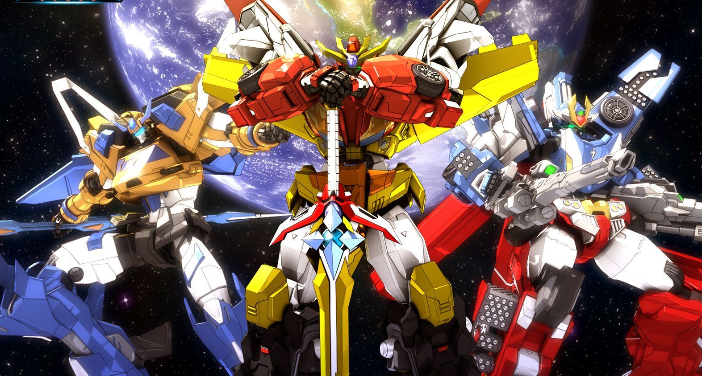

元气星魂之神龙拯救队
该片讲述了热爱冒险的14岁少年翔锋意外获得星魂之石，唤醒星魂战士烈空焰，从此肩负起守护地球的责任，寻找其他星魂战士并对抗外星侵略者的故事。剧中，一群少年志愿者组成神龙拯救队，团结协作解决各类突发事故与灾害，守护和平。

Theme Song: Meteora
Indicator: Only playback is provided (potential copyright considerations). If the player fails to load, please contact me.
米迪拉 (Meteora)（Italian for "meteor"）is a work released by 耀乐团 (Yaoyuetu), with lyrics by 张敬豪 and music by 冯宣元. It was later adapted as 《流星》 and used as the theme song for the new anime production 《神龙拯救队之元气星魂》.
Sources: Baidu